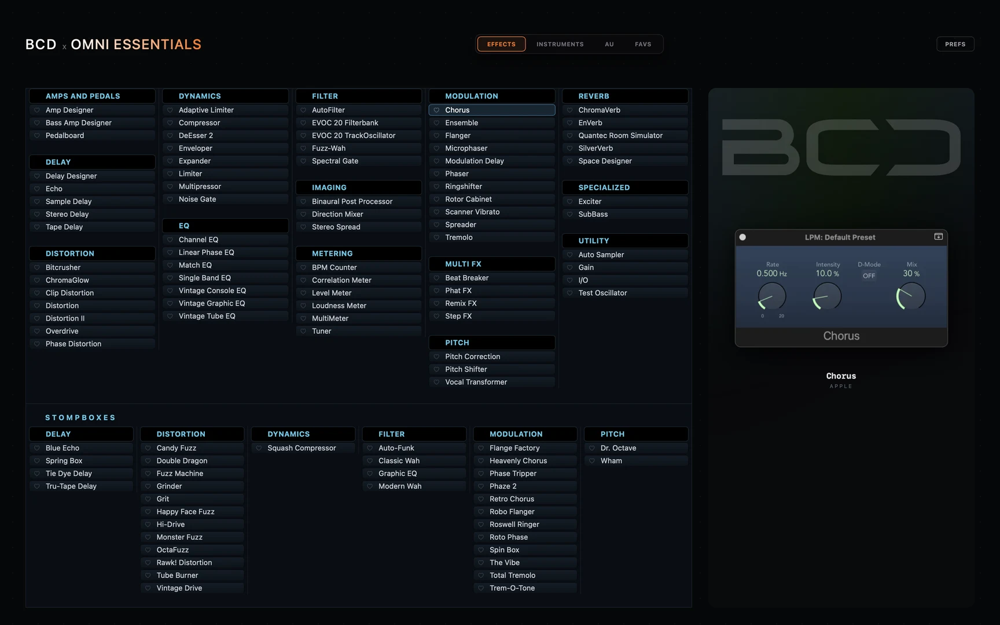
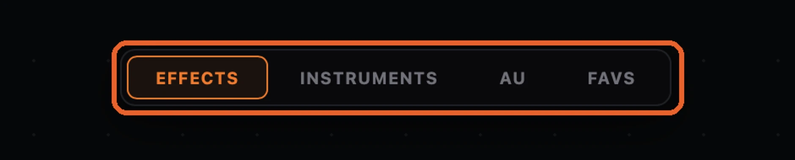
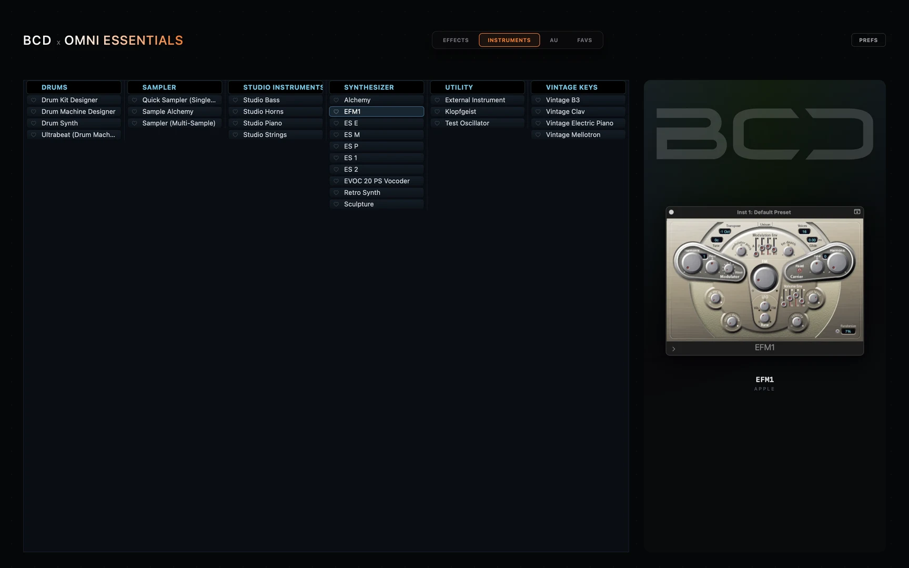
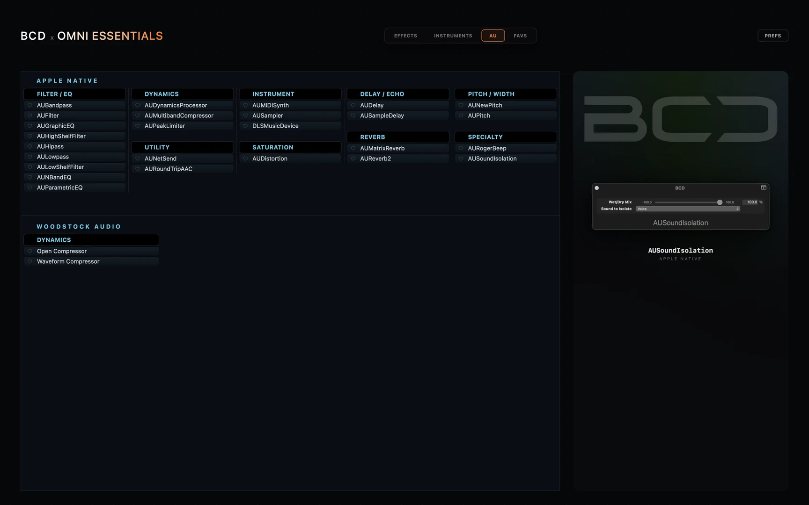

Everything Logic ships with, on one screen. Click a name and it loads into Logic.


Effects, Instruments, Audio Units and Favourites. Each is laid out by category, in columns, so everything Logic ships with is on one screen. No scrolling, no folders. Heart anything and the Favs tab collects it, with instruments kept separate from effects. Favourites are shared with Omni MAX, so a heart in one shows in the other.
Click a name and it loads into Logic. Hover a name and its artwork appears in the panel on the right.

A single click does more than load the instrument. Essentials first creates a software instrument channel strip and resets it, then loads the instrument. If your Logic has default settings on new tracks, this removes that problem.

The same one-click loading for Apple's native Audio Units, laid out by category.
DAW: Logic Pro 11.1 or later (required for the plugin search Omni uses).
Flexi-Deck: the free Flexi-Deck Player, running, with the BCD Launch Macros project loaded. Omni hands each plugin name to Logic through these macros. Without them you can still browse, but a click won’t open the plugin.
Mac: Apple Silicon, macOS 15 (Sequoia) or later.
Download